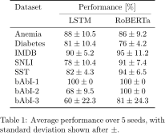
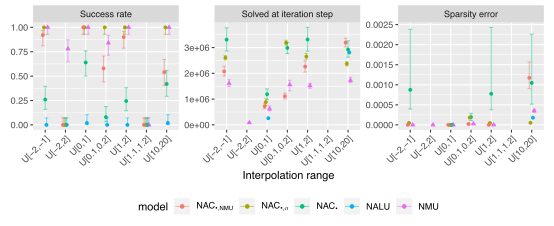
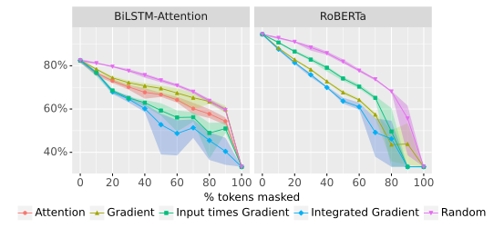

Statistical Reporting
for Deep Learning Researchers
Best practices
Slighly above the minimum
What we do

What we should do


In Computer Science
In Computer Science
Statistics
Central Limit Theorem
Confidence Interval
Two Sample t-test
Logit projection
Bootstrapping
Plots